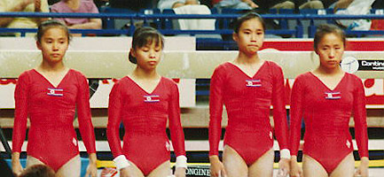

Choe Gyong Hui (PRK)
1991 University Games UB and B Champion

Choe (2nd from right) and teammates at the 1991 University Games.
Competition Results
1986
Intl. Championships of Romania: 4th AA, 3rd UB, 3rd FX, 6th B
1987
Moscow News: 7th AA, 3rd UB
1989
World Championships: 7th Team, 10th AA, 8th FX
1990
Asian Games: 4th V, 4th UB
1991
University Games: 1st Team, 4th AA, 1st UB, 1st B, 8th FX
World Championships: 9th Team, 23rd AA
1992
Olympic Games: 11th Team, 27th AA
World Championships: 12th UB (semis)
This page was created on October
14, 2005 and was last updated on November 19, 2005.
© Gymn Forum